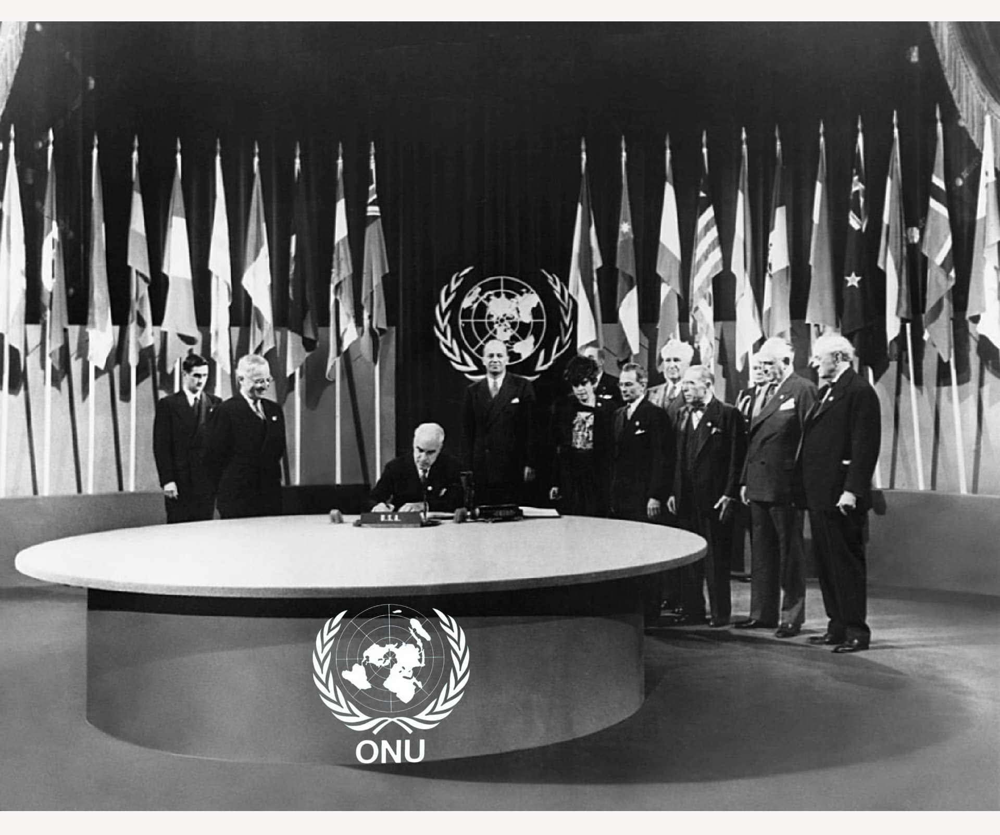
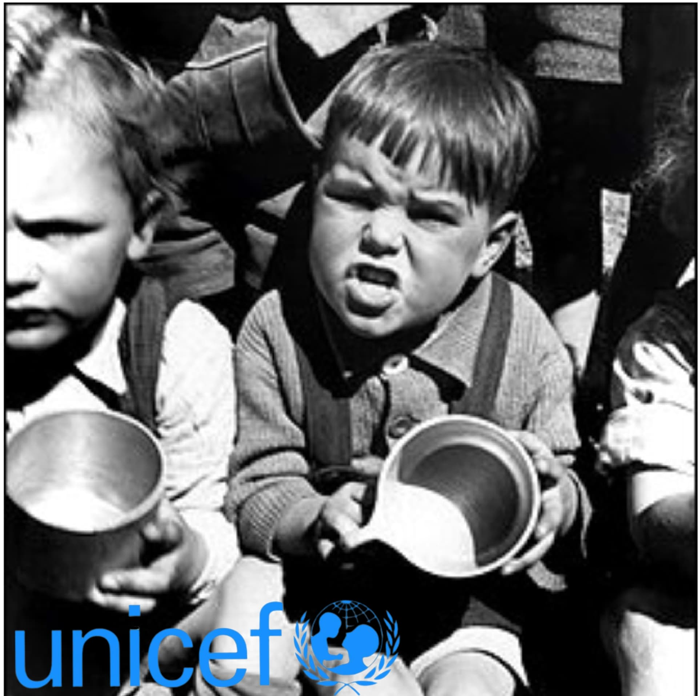
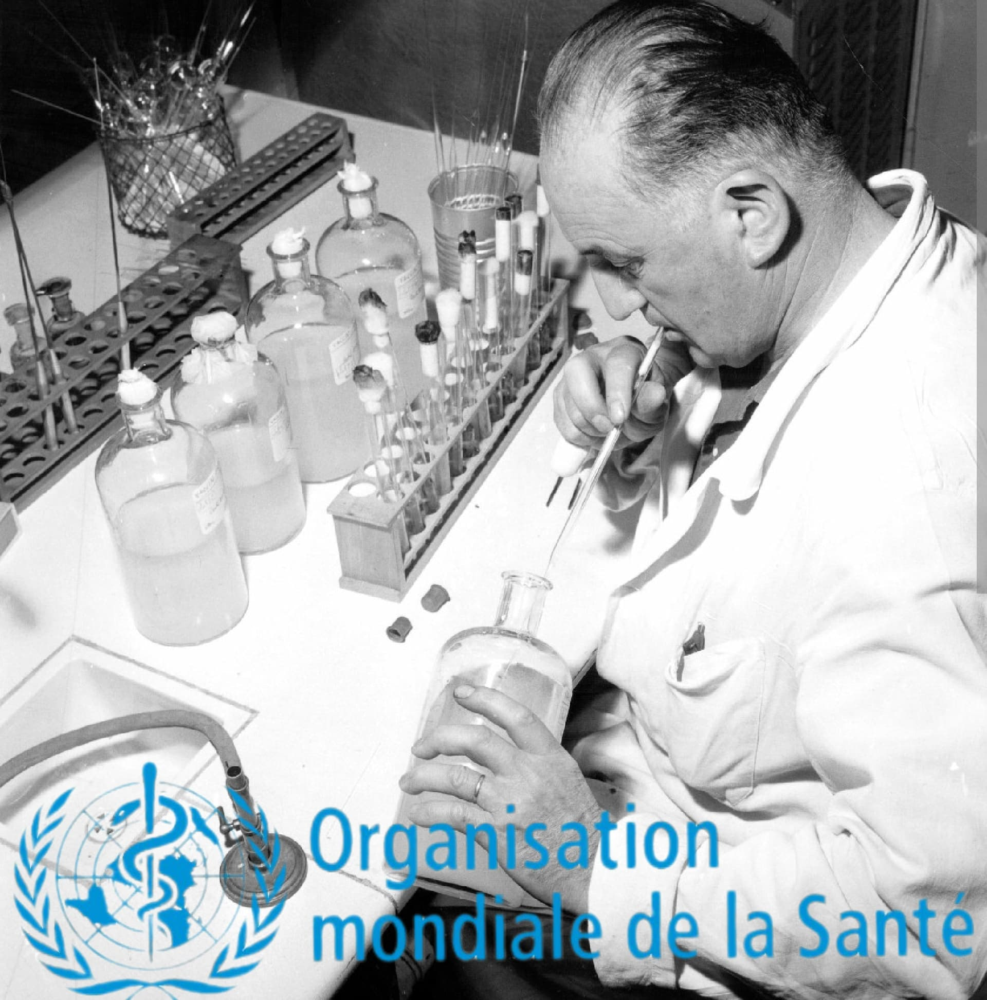
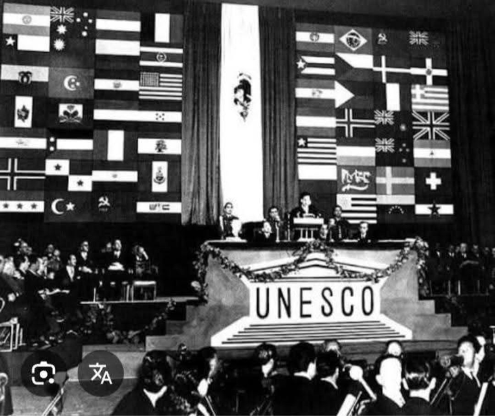
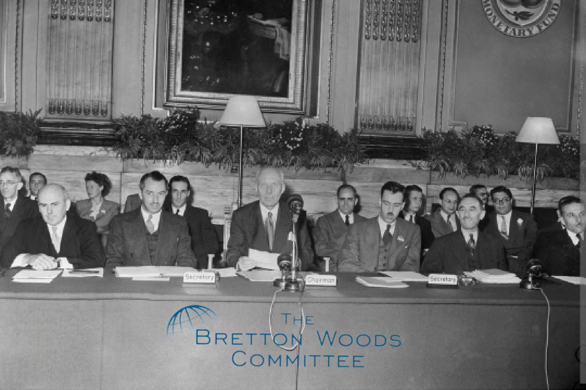
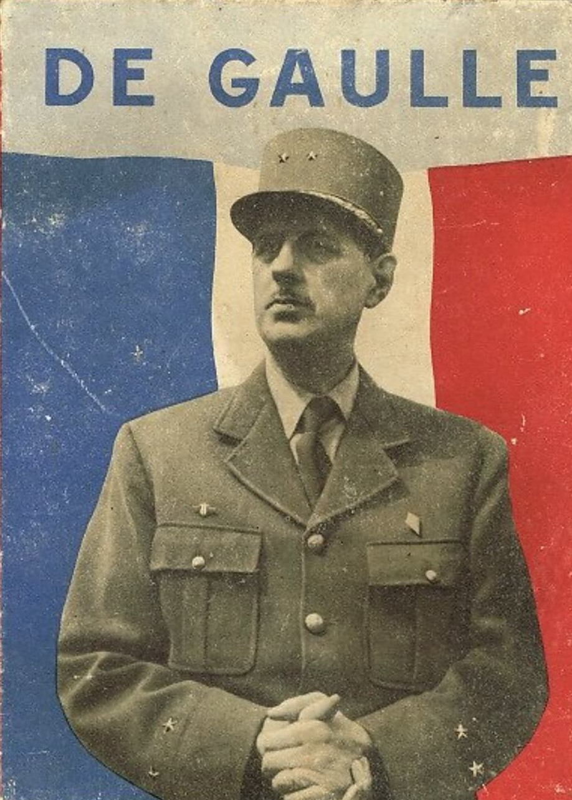

À la fin de la Seconde Guerre mondiale, les nations cherchent à éviter un nouveau conflit mondial. Entre 1945 et 1948, plusieurs institutions internationales majeures sont créées pour organiser la paix, protéger les populations, reconstruire les économies et encadrer la coopération entre États. Cette fiche présente ces organisations et la position du général de Gaulle face à ce nouvel ordre mondial.

L’ONU est officiellement créée le 24 octobre 1945, lorsque la Charte des Nations Unies entre en vigueur. Signée à San Francisco par 50 pays, elle remplace la Société des Nations, jugée incapable d’empêcher les conflits des années 1930.
L’objectif est de maintenir la paix, favoriser la coopération internationale et protéger les droits humains. Le Conseil de sécurité comprend cinq membres permanents dotés d’un droit de veto : États-Unis, URSS, Royaume-Uni, France et Chine.

Créé en 1946, l’UNICEF a pour mission d’aider les enfants victimes de la guerre. Il fournit nourriture, soins et protection aux enfants réfugiés et déplacés en Europe. L’organisation devient permanente en 1953.
L’UNICEF incarne la dimension humanitaire du nouvel ordre international, en plaçant la protection de l’enfance au cœur des priorités mondiales.

Fondée le 7 avril 1948, l’OMS coordonne les politiques de santé, surveille les épidémies et soutient les États dans l’amélioration de leurs systèmes de santé.
Dans l’après-guerre, elle joue un rôle essentiel dans la lutte contre les maladies et la mise en place de campagnes de vaccination mondiales.

Créée en novembre 1945, l’UNESCO vise à promouvoir l’éducation, la culture et les sciences. Elle considère que l’ignorance et la propagande ont favorisé la montée des régimes totalitaires.
En protégeant le patrimoine mondial et en soutenant les systèmes éducatifs, l’UNESCO cherche à construire une paix durable fondée sur la compréhension mutuelle.

Créés à Bretton Woods en 1944 et opérationnels en 1945, le FMI et la Banque mondiale stabilisent les monnaies, soutiennent les échanges internationaux et financent la reconstruction des pays détruits par la guerre.
Ils visent à éviter les crises économiques qui avaient favorisé la montée des régimes autoritaires dans les années 1930.

De Gaulle soutient l’idée d’un système international capable de prévenir les conflits, mais il se montre méfiant envers le poids des grandes puissances, en particulier les États-Unis et l’URSS.
Il refuse de participer à la conférence de San Francisco en 1945, estimant que le Conseil de sécurité et le droit de veto instaurent un « directoire des grandes puissances ». Il accepte néanmoins que la France soit membre permanent, conscient de l’importance de ce statut pour le prestige du pays.
En revanche, il soutient les institutions humanitaires et culturelles comme l’UNICEF et l’UNESCO, qui correspondent à sa vision d’une France protectrice et éducative.
Entre 1945 et 1948, la création de l’ONU, de l’UNICEF, de l’OMS, de l’UNESCO, du FMI et de la Banque mondiale marque la naissance d’un nouvel ordre international. Ces institutions cherchent à encadrer la paix, la santé, l’éducation, la culture et l’économie mondiale pour éviter le retour des catastrophes du premier XXe siècle.